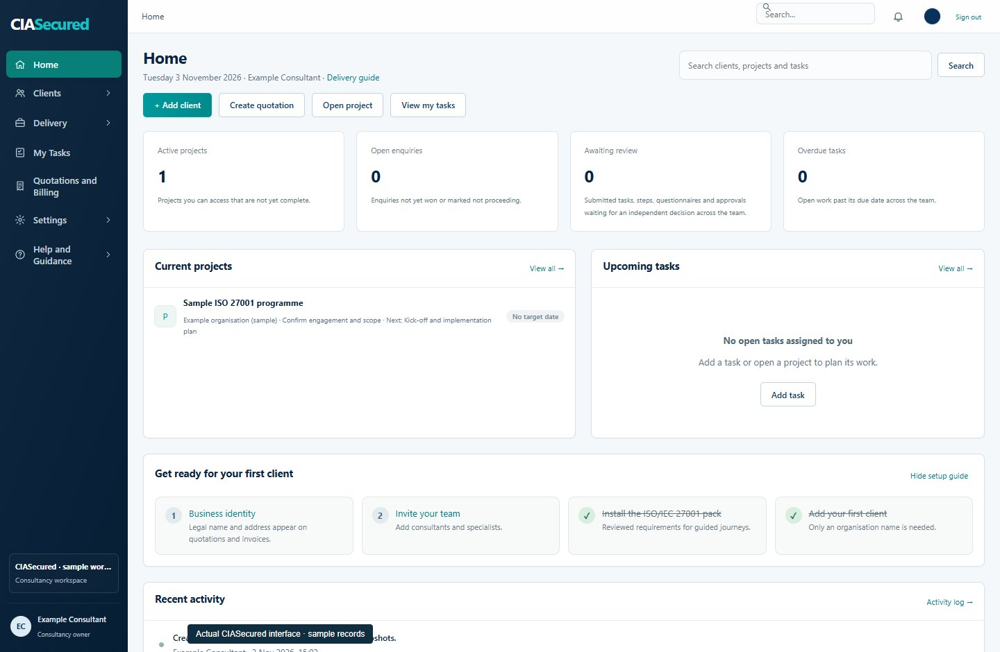
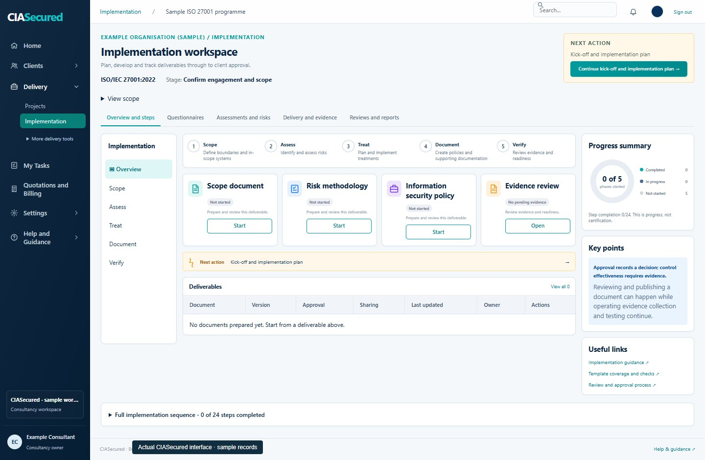

Understand
Establish the requirements, scope and stakeholders before work begins.
AUDIT & COMPLIANCE
You know what you need to achieve. We help your team work out what is missing, make the changes and prepare the evidence.
INSIDE CIASECURED
See what needs doing, who is responsible and which records are ready for review.

Screens captured from the real application using an isolated sample workspace.
PRODUCT
Build an assurance programme that connects your internal controls with the suppliers and services you depend on.
Agree the scope, assess gaps, manage implementation and prepare the records for review.
Explore audit & compliance 02 / THIRD-PARTY RISK MANAGEMENTBring supplier responsibilities, due diligence and review actions into the implementation plan.
Explore third-party riskSOLUTIONS
Explore all 23 frameworks and regulatory areas represented in the CIASecured library. Coverage is explained for each solution.
TECHNOLOGY, WITH ACCOUNTABILITY
Practical controls, named owners and a traceable record of the decisions that shape your programme.
How we deliverFROM DISCOVERY TO HANDOVER
Establish the requirements, scope and stakeholders before work begins.
Agree the priorities, responsibilities, deliverables and review points.
Work through controls and procedures with connected tasks and evidence.
Review the result and give your team a practical record to take forward.
VISIBLE DELIVERY
Project stages, assessment responses and implementation actions provide context for the next decision.
Explore the delivery workflow
PARTNERSHIPS
Discuss a collaboration as a service provider, technology partner or independent assurance professional.
Explore partnershipsBEFORE WE START
Yes. We begin by understanding what is already in place, what remains and where your team needs help. We agree the work before starting.
No. Tell us what is driving the requirement, such as a customer request, an upcoming review or a new service. We can discuss the options during discovery.
Independent certification or attestation is a separate assessment. We agree what preparation support is included and make any external arrangements and fees clear.
Use the contact form to prepare your details, then send them by email or WhatsApp. You can also contact us directly using the details in the footer.
WORK WITH CIASECURED
Tell us where you are now and what you need to achieve. We’ll talk through how we can help.